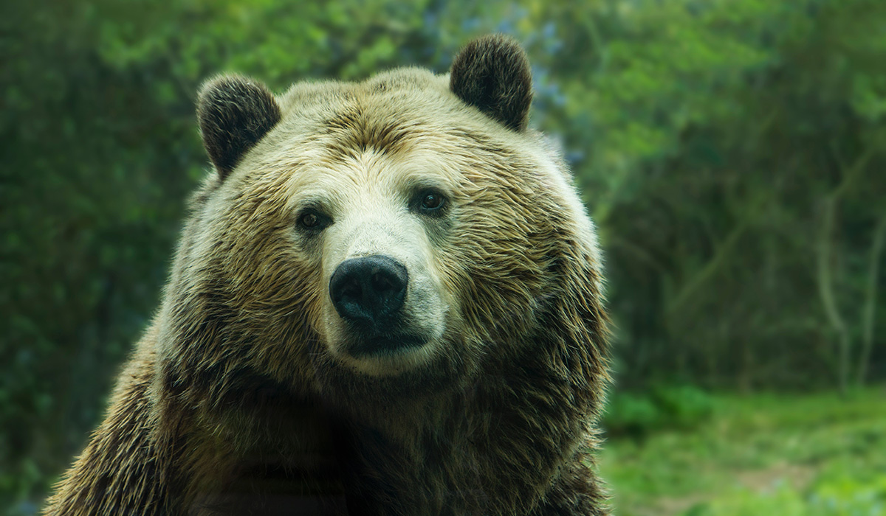

Animais Fantásticos


Raposa
As raposas são animais mamíferos e onívoros pertencentes à família Canidae. São vulpídeos de porte médio, caracterizados por um focinho comprido e uma cauda longa e peluda.
Também apresentam como particularidade suaspupilas ovais, semelhantes às pupilasverticais dos felídeos.
De cerca de 40 espécies reconhecidas comoraposas, somente 12 pertencem ao gêneroVulpes das "raposas verdadeiras", do qual araposa vermelha é a mais comum.
Também apresentam como particularidade suaspupilas ovais, semelhantes às pupilasverticais dos felídeos.
Esquilo
As raposas são animais mamíferos e onívoros pertencentes à família Canidae. São vulpídeos de porte médio, caracterizados por um focinho comprido e uma cauda longa e peluda.
Também apresentam como particularidade suas pupilas ovais, semelhantes às pupilas verticais dos felídeos.
De cerca de 40 espécies reconhecidas como raposas, somente 12 pertencem ao gênero Vulpes das "raposas verdadeiras", do qual a raposa vermelha é a mais comum.
Também apresentam como particularidade suas pupilas ovais, semelhantes às pupilas verticais dos felídeos.
Urso
As raposas são animais mamíferos e onívoros pertencentes à família Canidae. São vulpídeos de porte médio, caracterizados por um focinho comprido e uma cauda longa e peluda.
Também apresentam como particularidade suas pupilas ovais, semelhantes às pupilas verticais dos felídeos.
De cerca de 40 espécies reconhecidas como raposas, somente 12 pertencem ao gênero Vulpes das "raposas verdadeiras", do qual a raposa vermelha é a mais comum.
Também apresentam como particularidade suas pupilas ovais, semelhantes às pupilas verticais dos felídeos.
Lobo
As raposas são animais mamíferos e onívoros pertencentes à família Canidae. São vulpídeos de porte médio, caracterizados por um focinho comprido e uma cauda longa e peluda.
Também apresentam como particularidade suas pupilas ovais, semelhantes às pupilas verticais dos felídeos.
De cerca de 40 espécies reconhecidas como raposas, somente 12 pertencem ao gênero Vulpes das "raposas verdadeiras", do qual a raposa vermelha é a mais comum.
Também apresentam como particularidade suas pupilas ovais, semelhantes às pupilas verticais dos felídeos.
Macaco
As raposas são animais mamíferos e onívoros pertencentes à família Canidae. São vulpídeos de porte médio, caracterizados por um focinho comprido e uma cauda longa e peluda.
Também apresentam como particularidade suas pupilas ovais, semelhantes às pupilas verticais dos felídeos.
De cerca de 40 espécies reconhecidas como raposas, somente 12 pertencem ao gênero Vulpes das "raposas verdadeiras", do qual a raposa vermelha é a mais comum.
Também apresentam como particularidade suas pupilas ovais, semelhantes às pupilas verticais dos felídeos.
Leão
As raposas são animais mamíferos e onívoros pertencentes à família Canidae. São vulpídeos de porte médio, caracterizados por um focinho comprido e uma cauda longa e peluda.
Também apresentam como particularidade suas pupilas ovais, semelhantes às pupilas verticais dos felídeos.
De cerca de 40 espécies reconhecidas como raposas, somente 12 pertencem ao gênero Vulpes das "raposas verdadeiras", do qual a raposa vermelha é a mais comum.
Também apresentam como particularidade suas pupilas ovais, semelhantes às pupilas verticais dos felídeos.
FAQ
- Qual a idade dos animais?
- As raposas são animais mamíferos e onívoros pertencentes à família Canidae. São vulpídeos de porte médio, caracterizados por um focinho comprido e uma cauda longa e peluda.
- Eles são fantásticos?
- Também apresentam como particularidade suas pupilas ovais semelhantes às pupilas verticais dos felídeos.
- Qual a diferença?
- As raposas são animais mamíferos e onívoros pertencentes à família Canidae. São vulpídeos de porte médio, caracterizados por um focinho comprido e uma cauda longa e peluda.
- Como proteger?
- Também apresentam como particularidade suas pupilas ovais, semelhantes às pupilas verticais dos felídeos.


 9
9


- 


Números
Contato

- contato@origamid.com
- +55 (21) 9.9999-9999
- Rua de Tal, nº. 1.234
- Rio de Janeiro/RJ
- Seg à Sex, das 08:00 às 18:00
- Faça sua doação de 0 bitcoin para nos ajudar